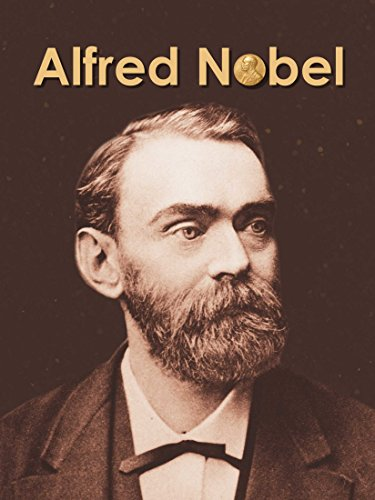

A man of peace

Alfred Nobel
The following is a timeline of Alfred Nobel:
- 1833: Born in Stockholm, Sweden
- 1842: The Nobel family left Stockholm to join the father in St. Petersburg.
- 1850: Left Russia to spend a year in Paris learning Chemistry, then spent four years in the United States working under the direction of John Ericsson
- 1862: Built a small factory to manufacture nitroglycerin, also researching to find a safe way to detonate the explosives
- 1863: Invented a practical detonator, consists of a wooden plug inserted into a larger charger of nitroglycerin in a metal container
- 1864: An explosion in the family's factory killed 5 people including his brother Emir
- 1867: He mixed nitroglycerin and an absorbent substance, producing what he named "Dynamite"
- 1875: Invented a more powerful form of dynamite, blasting gelatin
- 1895: In the opening of his will drawn in Paris, and had deposited in a Stockholm bank which contains the bulk of his fortune in trust to establish the most highly regarded international awards, "Nobel Prizes"
- 1896: Died of a stroke in San Remo, Italy
Want to know more, click here